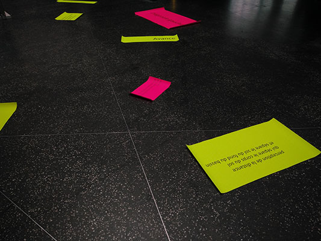
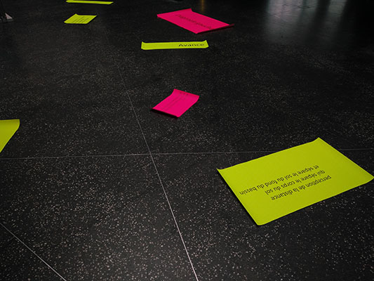

enfoncé dans le sol rectangle bleu Piscine désafectée dans le lieu marche sur le dallage petits carreaux blancs joints gris parfois un carreau noir plus petit au mur une mosaïque failles fissures, peinture craquelée Avance dix pas trou comme impacte d’un objet lourd ou quelqu’un qui creuse un sous terrain Diagonale gauche un toboggan trois virages intérieurs trois virages extérieurs un looping Plastique PVC très dur, s’érige Passe le doigt sur le plastique décolle la poussière Monte dessous le quadrillage métal des marches le quadrillage carrelé du sol Croise trois tronçons de demi sphère PVC reliés par des rangées de boulons à têtes rondes Point de vu nouveau fond de la pièce une porte sans porte un seuil devant un bac carrelé Ascension Progression cime du toboggan perception de la distance qui sépare le corps du sol et sépare le sol du fond du bassin équidistance dont le centre et la jonction carrelage blanc première marche métal gris sur la passerelle impression de à tout moment tomber dedans par dessous la rambarde dans le bleu trop ciel réception du corps par le béton A l’autre bout de l’étendu A hauteur d’yeux, point culminant du plafond se décroche un débris son écho sec dans le gouffre rejoindre le point 0 de la hauteur totale l’échelle n’atteint pas le sol négatif le rectangle, bassin se déploie